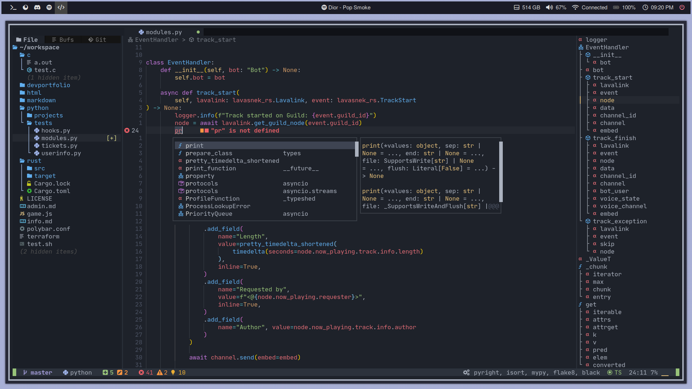
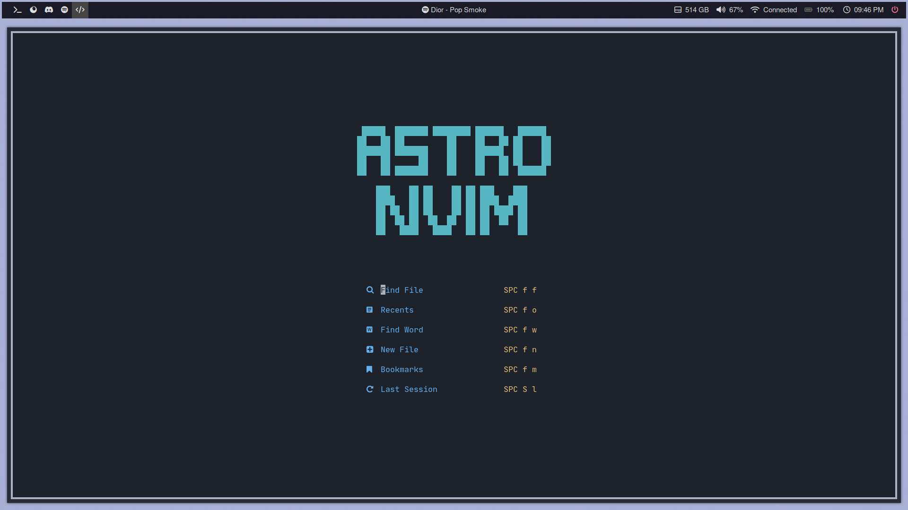
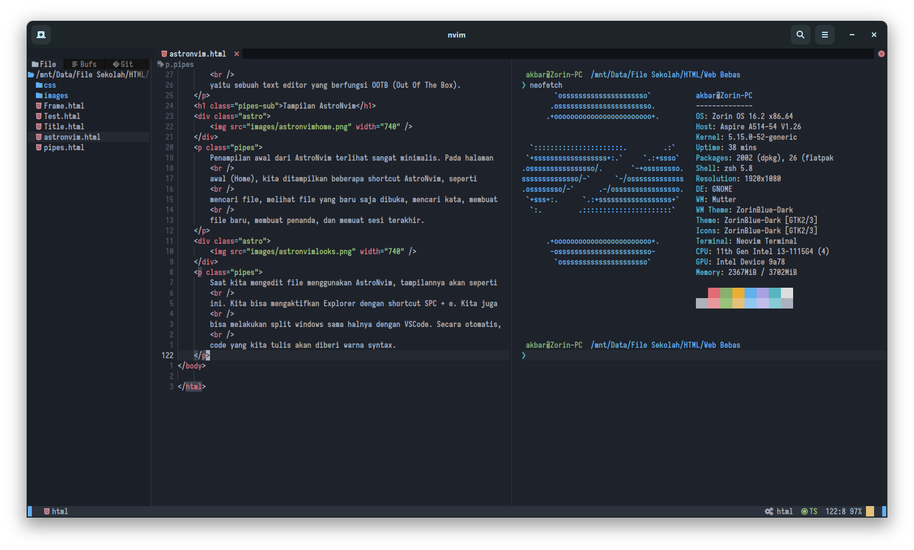

Nama saya Mifthahul Rezki Akbar. Lebih biasa dipanggil Akbar. Saya adalah siswa dari SMK Negeri 1 Bukittinggi. Saya memiliki hobi mengotak-atik laptop saya sendiri. Saya tertarik dengan hal-hal yang berkaitan dengan Linux.

Pada artikel ini, kita akan membahas sebuah text editor bernama
AstroNvim. Text editor ini merupakan fork (pengembangan) dari
Neovim, dimana semua plugin yang tersedia untuk Neovim digabung
dan dibentuk menjadi sebuah text editor yang siap digunakan
tanpa perlu melakukan konfigurasi pada file config.
Sebelum mengenal lebih lanjut apa itu AstroNvim, alangkah baiknya
kita harus tau apa itu Neovim. Neovim merupakan pengembangan dari
text editor bernama Vim. Vim sendiri adalah text editor dan Vim
merupakan versi peningkatan dari Vi.
Neovim memiliki kelebihan, dimana Neovim menggunakan bahasa
pemrograman Lua. Bahasa pemrograman ini digunakan sebagai dasar
membuat plugin untuk Neovim. Walaupun Vim-script (bahasa skrip
untuk Vim) bisa digunakan untuk membuat plugin, namun Lua dapat
membuat plugin dengan lebih optimal.
Bagi para pengguna Neovim tingkat lanjut, ini merupakan sebuah
keuntungan karena dapat menggunakan bahasa pemrograman Lua untuk
membuat plugin, patch, dll.. Hal ini juga merupakan benefit
bagi Lua programmer yang menggunakan Neovim sebagai text editor.
Namun, bagi para pengguna baru yang ingin menggunakan Neovim,
ini bukan merupakan hal yang terlalu benefit bagi mereka.
Neovim bisa menjadi salah satu text editor yang sulit bagi para
pengguna baru atau pemula. Mengapa? Karena untuk dapat merasakan
benefit dari menggunakan Neovim, Neovim perlu ditambahkan beberapa
plugin untuk menambahkan fungsi dan fitur-fitur lainnya. Nah,
inilah yang menjadi masalah. Mengkonfigurasi Neovim bukan merupakan
hal yang mudah, karena kita harus mengetahui bahasa pemrograman
agar mengkonfigurasi menjadi lebih mudah. Ini juga menjadi hal
yang kompleks jika kita tidak teliti dalam mengkonfigurasi, karena
bisa terjadi error. Bahkan, kita benar-benar tidak tahu apa yang
menjadi penyebab dari error tersebut.
AstroNvim merupakan text editor berbasis Neovim, dimana beberapa
plugin yang tersedia akan digunakan dan menjadi sebuah text editor
yang fungsional dan memiliki fitur-fitur yang biasa ditemukan pada
text editor lainnya. AstroNvim memudahkan pengguna dalam mencoba
Neovim, karena kita tidak perlu mengkonfigurasi file config Neovim
untuk menambahkan plugin, menambahkan shortcut, memodifikasi tampilan
Neovim, dan lainnya. Hal ini yang menjadi kelebihan dari AstroNvim,
yaitu sebuah text editor yang berfungsi OOTB (Out Of The Box).

Penampilan awal dari AstroNvim terlihat sangat minimalis. Pada halaman
awal (Home), kita ditampilkan beberapa shortcut AstroNvim, seperti
mencari file, melihat file yang baru saja dibuka, mencari kata, membuat
file baru, membuat penanda, dan memuat sesi terakhir.
Saat kita mengedit file menggunakan AstroNvim, tampilannya akan seperti
ini. Kita bisa mengaktifkan Explorer dengan shortcut SPC + e. Kita juga
bisa melakukan split windows sama halnya dengan VSCode. Secara otomatis,
code yang kita tulis akan diberi warna syntax.

Kita juga bisa mengaktifkan terminal pada AstroNvim dengan shortcut
SPC + t + v untuk membuka terminal secara vertical split. Masih banyak
fitur-fitur yang tersedia pada AstroNvim ini. Langsung saja kita ke
tahapan instalasinya!
Kali ini kita akan mencoba menginstal AstroNvim di Linux. Sebenarnya,
instalasi AstroNvim ini sangat mudah dan tidak terlalu kompleks.
# Installing Neovim
$ sudo apt install neovim # Ubuntu/Debian
$ sudo pacman -S neovim # Arch Linux
$ sudo dnf install neovim # Fedora
# Installing AstroNvim
$ git clone https://github.com/AstroNvim/AstroNvim ~/.config/nvim
$ nvim +PackerSync